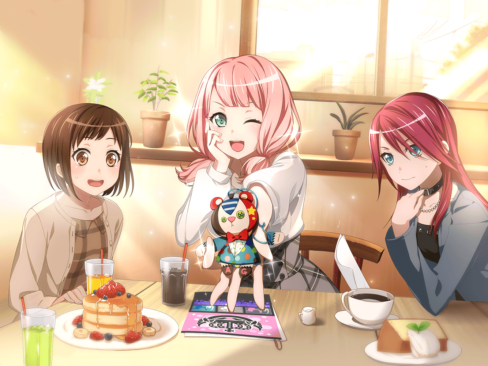

ひまり
わぁ、かわいいな～！
このケーキ、新商品なんだってっ！
つぐから聞いて、ずっと気になってたんだ～
モカ
ひーちゃんって、こーいうの好きだよね～。
次は、食べるのがもったいないっ！ って言いそ～
ひまり
あはは、バレた？
でも、食べないほうがもったいないもんね！
モカ
そーそー、早く食べよ～。
それでは……いただきま～す
モカ
もぐもぐ……。
ん～、チョコがたっぷりでおいし～
ひまり
だねっ！
こんなにおいしいと、いくらでも食べられちゃうよ～♪
モカ
……たくさん食べたら太るよ？
ひまり
うっ……そ、そうだね。
衣装が入らなくなったら大変だし、
ほどほどにしないと……
モカ
そ～いえば、次の練習っていつだっけ～？
明日？ あさって？
ひまり
もう、練習日くらいちゃんと覚えててよ～。
練習はあさって！
モカ
おっけ～。
今、ちゃんと覚えたから、だいじょ～ぶ
ひまり
ホントに？ 心配だなぁ……
モカ
心配なさるな。
モカちゃんはこう見えて、記憶力いいのである
ひまり
それは否定できない……っ！
モカっていつもボーってしてるけど、
テストの点いいもんね
モカ
モカちゃんはやればできる子だからね～。
それに、ひーちゃんから、
お守りをもらってから、すっごいんだよ～？
ひまり
お守りって……
ガルジャムのときに、私がみんなに渡したやつ？？
モカ
そーそー
モカ
なんと、あのお守りのおかげで、テストで１００点連発！
身長も３０センチ伸びました！
宝くじも当たって、人生上向きになりました！
モカ
それもこれも、すべてひまり様のおかげです。
はは～
ひまり
も～、からかわないでよ！
成績はもとからよかったし、
身長だって、全然伸びてないでしょっ！
モカ
いやいや、こー見えてすっごい伸びてるから。
ひーちゃんのつむじだって丸見えだよ～。
うりうり～
ひまり
わわっ、頭なでないで～！？
髪がぐしゃぐしゃになっちゃうってばっ！
モカ
どんな髪をしてても、ひーちゃんはかわいいよ？
ひまり
えっ、そう！？
ふふ、うれしいなあ～
ひまり
……じゃなくて！
モカったら、適当なことばかり言うんだから
モカ
む～。
これでもひーちゃんのことほめてるのに……。
モカちゃんの気持ちが伝わらないなんて、悲しいな～
モカ
……まあ、
このお守りがあたしたちのユウジョーを守ってくれたってのは、
ホントなんだけどね
ひまり
え？ 何か言った？？
声が小さくて、聞こえなかったよ～
モカ
さ～て、なんて言ったでしょう？
ひまり
質問で返さないで！
そう言われると、余計に気になるっ。
ね、教えて？
モカ
んー、そうだな～……。
歪な形をしてるし、ご利益なんてなさそうだけど、
持ってるだけで、なんとなく落ち着くなって
モカ
離れててもみんな一緒にいる気がして、なんかうれしい
ひまり
モカ……
ひまり
えへへっ、
モカがそんなふうに思ってくれてたなんて～。
がんばって作ったかいがあったよ～♪
モカ
そんなにうれしいの？
ひまり
そりゃあそうだよ！
モカが私をほめてくれることなんて、めったにないもんっ
モカ
そっかー。
それじゃあ、今日はひーちゃんをたくさんほめてしんぜよ～
ひまり
ホントに！？
何をほめてくれるのっ？
モカ
えー、コッホン。
それでは……いきま～す
モカ
ひーちゃんはいつも元気で明るいよね～。
ひーちゃんがいるだけで、みんなも笑顔になれるよね～
ひまり
え～、そうかなー？
モカ
おかし作りだって上手だし、頼れるリーダーだし、
なんだかんだ、みんなひーちゃんに感謝してると思うよ～
ひまり
ふっふっふー。照れますな～
モカ
意外と不器用な性格……あ、これは意外じゃないか～。
そんなところもチャームポイントだと思うし
ひまり
ありがと……って、えっ！？
不器用……？
モカ
あの『えいえい、おー！』も空気読めてないなーって思うけど、
定番みたいになってるよね～
ひまり
あのー……モカ？
それって、ほめてないような……
モカ
ほめてるほめてる～。
ひーちゃんが空気読めたら、ひーちゃんじゃないし？
みんな、そんなひーちゃんが好きなんじゃな～い？
ひまり
ううー……。
うれしいけど、すっごく微妙っ！
でも、ありがとうっ！
モカ
……ここで素直にお礼を言えるのが、
ひーちゃんらしいな～